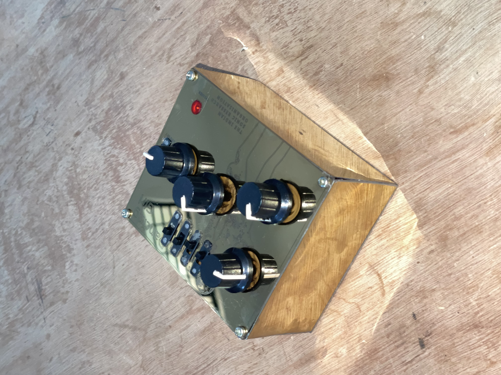
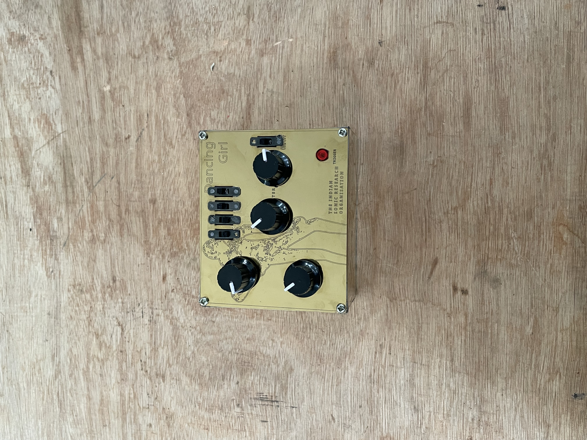
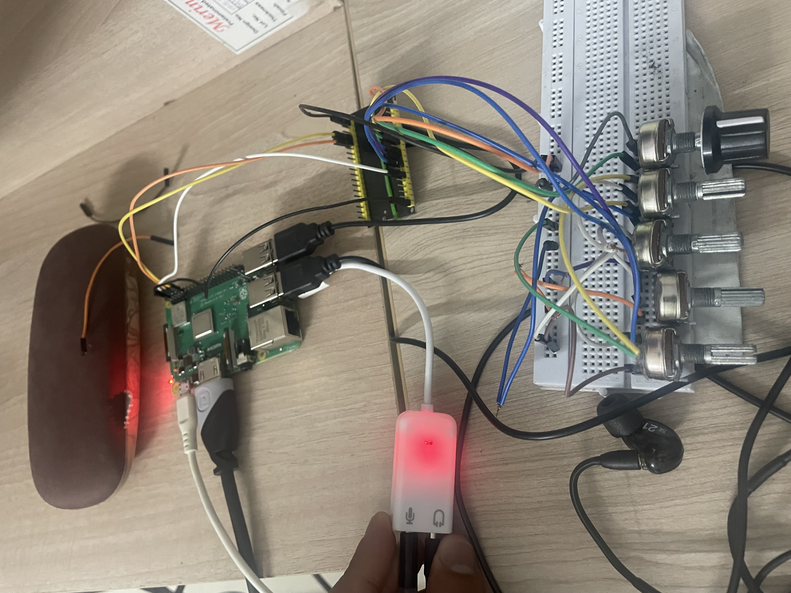

DIY Instruments & FX
A collection of open source DIY synthesizers:
The weird sound generator has 2 analog oscillators, 2 LFOs (Goes in audio speed) and a filter.
3 schmitt trigger circuits combining which can be manipulated using potentiometers and Light Dependent Resistors.

A feedback circuit based on the PAM8403 amplifier IC. The capacitors in the circuit make the sound rhythmic.

The circuit was printed using the open source PCB Sparkfunk. An enclosure was made for the circuit using aluminium.



Running on a Raspberry Pi 3B+. The effect pedal has a tape delay, a convolution reverb and a flanger to choose from. Parameters like time, feedback can be controlled using knobs connected to an ESP32. The project is ongoing and right now exploring non-contact sensors like Time of Flight to control parameters…
